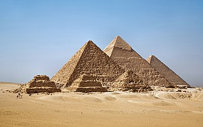

Египетские пирамиды

Пирамиды – единственное чудо из заветной семёрки, сохранившееся до наших дней. Оно же и самое древнее: возраст трёх великих пирамид, которыми восхищались греки и продолжаем поражаться мы, – фараонов Хеопса, Хефрена и Микерина – около пяти тысяч лет. Эти колоссальные сооружения пока неподвластны влиянию времени. Самая громадная – пирамида Хеопса – высотой 147 метров сложена из 2 300 000 глыб известняка, каждая из них весом около двух тонн.
Пирамиды служили усыпальницами царям Египта и строились задолго до их смерти в течение десятков лет. Как это происходило в точности – неизвестно. Одни историки говорят, что строителями были бесправные рабы, другие – что на возведении пирамид за кормление трудились египетские крестьяне, сменявшие друг друга каждые три месяца. До сих пор неизвестно также в точности, каким способом втаскивали гигантские глыбы наверх по мере роста пирамиды. Какой-либо техникой, кроме блоков и рычагов, строители в то время не располагали. Как бы то ни было, работа гигантская и удивительно точная: блоки сложены так, что между соседними не втиснется лезвие ножа. С точки зрения современного человека, пирамиды бессмысленны, зато величественны, прекрасны и совершенны. Поэтому и сегодня они неизменно поражают всех, кто их видит.